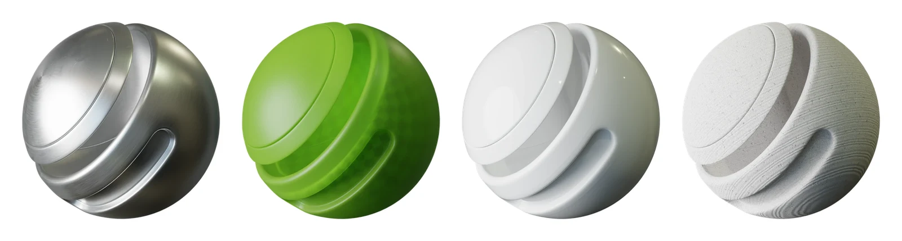
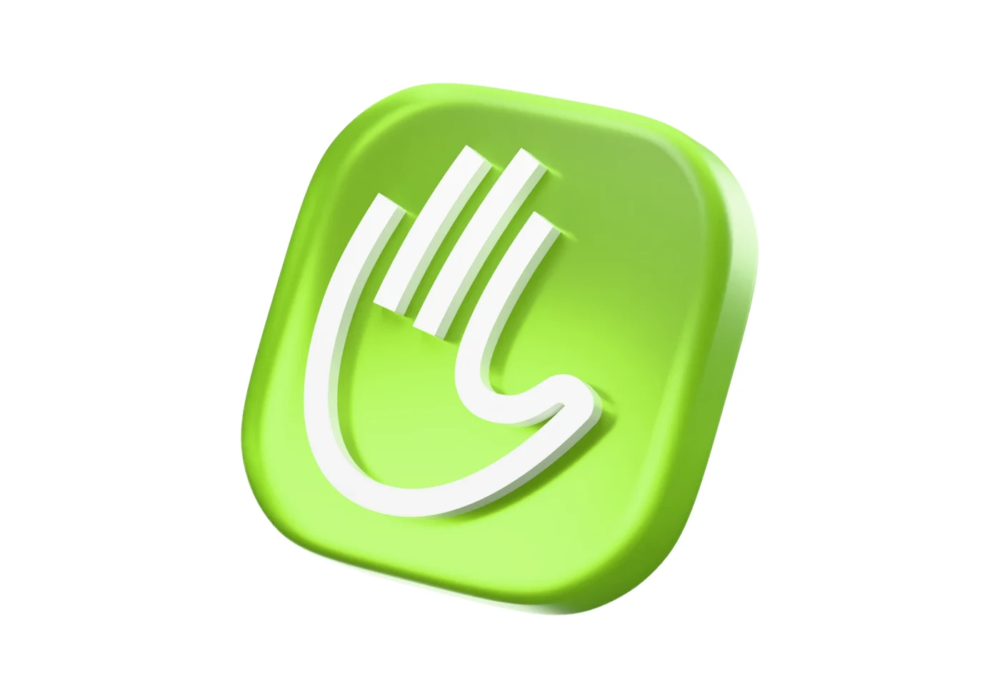
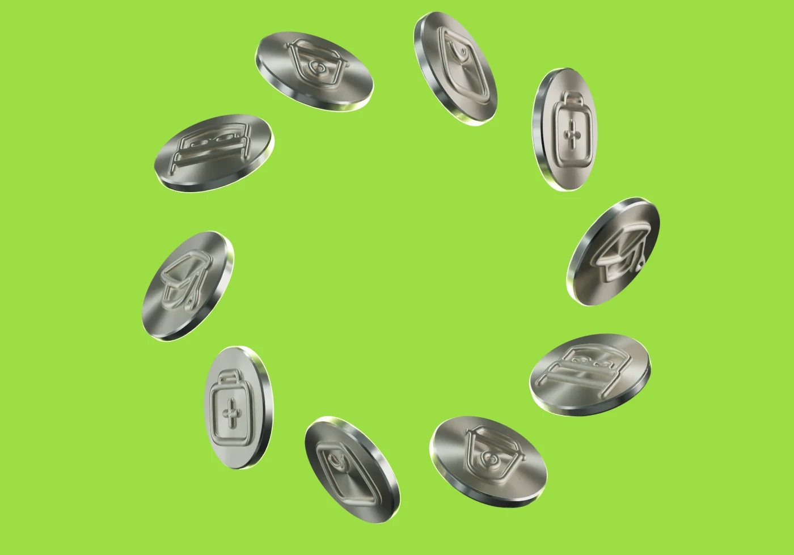
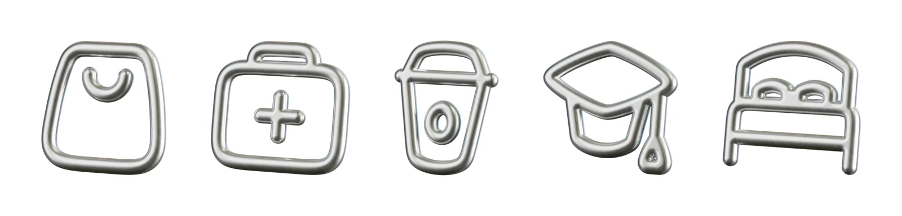

The Lansy icon and the industry icons as objects: a few materials, one studio light, one way of moving.
Four materials, each with one job. Nothing else.

3d/dl/mats.#9CDE45, never a brighter or a paler green.

